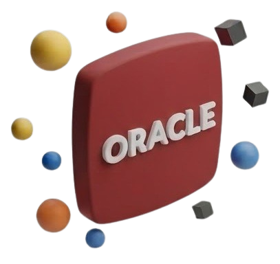
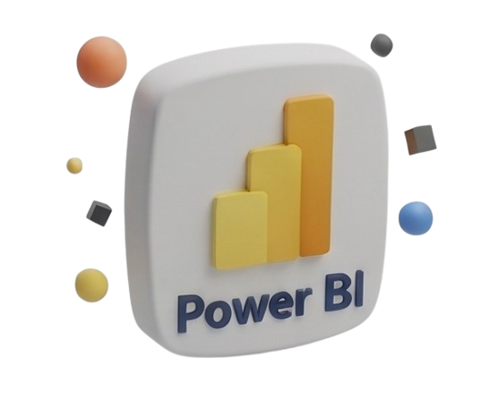

Hola.
Soy Nataly 👋
Desarroladora full stack 👾




Proyectos Full Stack
Hackathon 2026
Java & Backend
Desarrolladora Junior Full-Stack con enfoque en Java 🚀 Mi camino hacia la programación comenzó desde un lugar diferente: procesos, datos, reportes y análisis. Trabajando con problemas reales descubrí que no solo quería encontrar oportunidades de mejora, también quería crear las herramientas que ayudaran a solucionarlas. Así pasé de preguntarme "¿cómo podemos mejorar esto?" a preguntarme "¿y si lo programamos?". Me gusta investigar, aprender, probar nuevas ideas y convertir desafíos en soluciones funcionales. Durante mi formación he desarrollado habilidades en Java, desarrollo Full-Stack, bases de datos y control de versiones con Git, creando proyectos donde combino lógica, creatividad y organización. Creo que la programación es más que escribir código: es entender necesidades, resolver problemas y construir experiencias útiles. Este portafolio representa mi proceso de crecimiento, los proyectos que he creado y los retos que me siguen formando como desarrolladora.
Aplicación web interactiva desarrollada para la gestión integral de reservas y la búsqueda de disponibilidad en un hotel especializado en el cuidado de mascotas. El proyecto combina una interfaz amigable e intuitiva con herramientas eficientes para optimizar la experiencia de los usuarios y administradores.
Planificador de Tareas es una aplicación web intuitiva diseñada para organizar las actividades diarias, optimizar la gestión del tiempo y mejorar la productividad personal o en equipo.
Friticos Colombia es una landing page interactiva inspirada en la gastronomía tradicional colombiana, desarrollada en el marco de una hackathon en la cual obtuvo el 3er puesto. Descripción general Una propuesta web dinámica y atractiva que rinde homenaje a los fritos típicos del país, combinando un diseño visual llamativo con una experiencia de usuario fluida y temática.